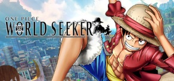
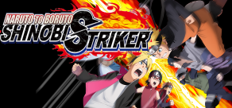
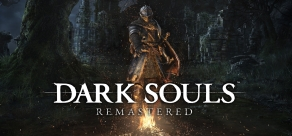
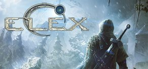

ONE PIECE World Seeker
BANDAI NAMCO Entertainment
For PC

Залиште компас будинку і разом з Луффі вирушайте в пригоду, де вам належить відкрити безліч
таємниць на новий острів!
Динамічні «гумові» бої
• У ролі Манка Д. Луффі досліджуйте острів.
• Оригінальний сюжет
На загадковому Тюремному острові відбуваються дивні події. Включає оригінальних персонажів,
створених самим Ейітіро Одою...

NARUTO TO BORUTO: SHINOBI STRIKER
BANDAI NAMCO Entertainment
For PC
BANDAI NAMCO Entertainment
For PC
Франшиза «Наруто» повернулась із абсолютно новим досвідом у NARUTO TO BORUTO: SHINOBI STRIKER!Ця
нова гра дозволяє геймерам битися як команда з 4 осіб, щоб конкурувати з іншими командами в
Інтернеті! Графічно SHINOBI STRIKER також побудований з нуля в абсолютно новому графічному
стилі...

Dark Souls: Remastered
BANDAI NAMCO Entertainment
For PC
BANDAI NAMCO Entertainment
For PC
Dark Souls: Remastered - це перевидання найпершої частини культової рольової серії, яке пропонує
гравцям підтягнуту графіком, збільшена кількість кадрів в секунду, різні балансові правки, а
також вихід на портативної Nintendo Switch....

ELEX
THQ Nordic
For PC
THQ Nordic
For PC
ELEX - ретельно опрацьована динамічна рольова гра, створювана відзначеними нагород авторами
серії Gothic. Її дія розгортається в новій постапокаліптичній науково-фантастичної всесвіту:
гравців чекає величезний безшовний світ, повний яскравих персонажів, гротескних мутантів,
моральних дилем і напружених пригод....